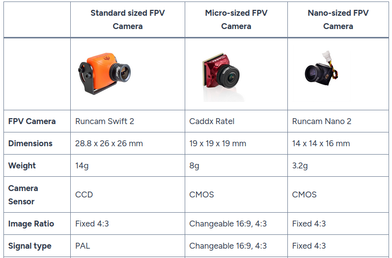
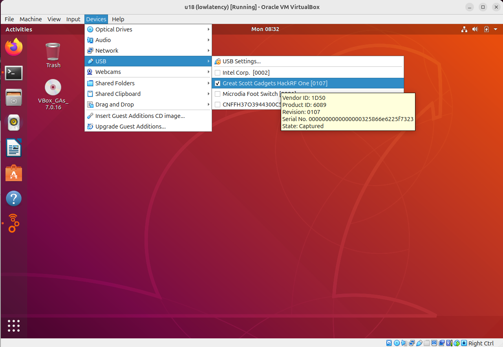
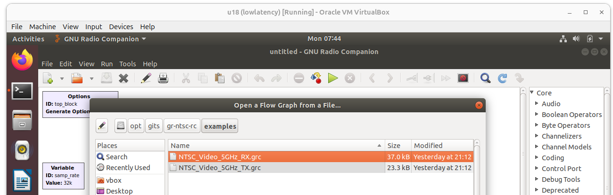
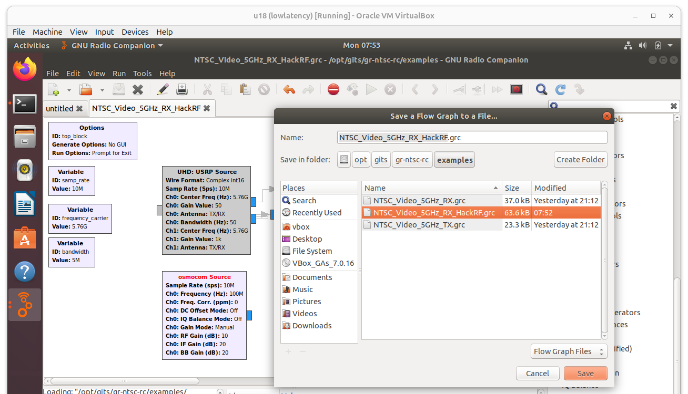
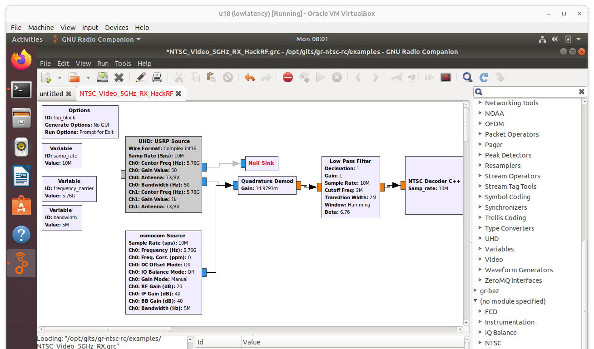
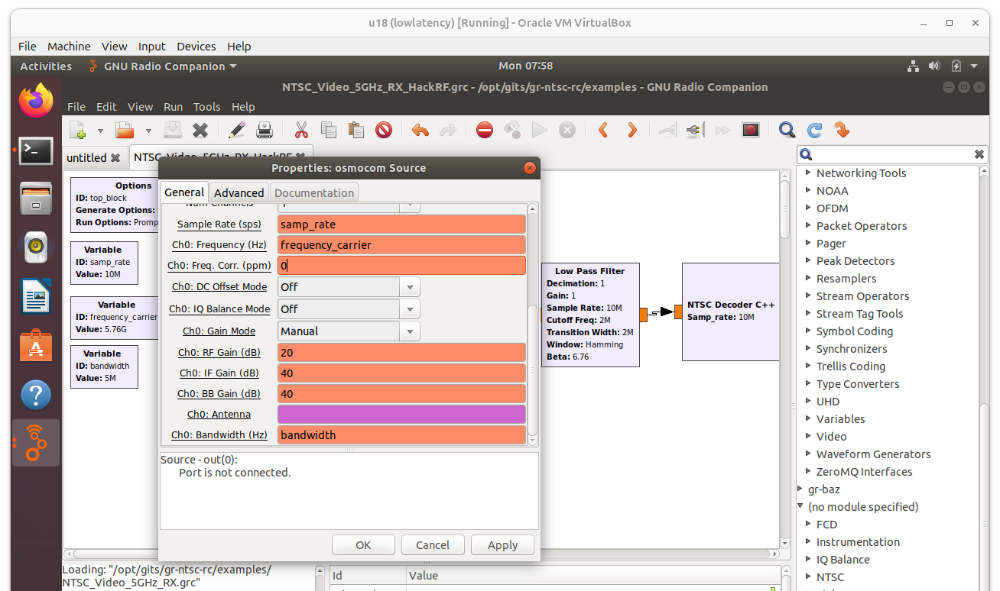
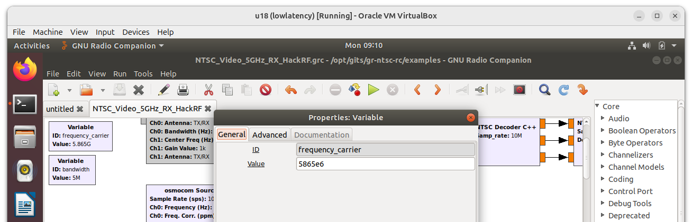
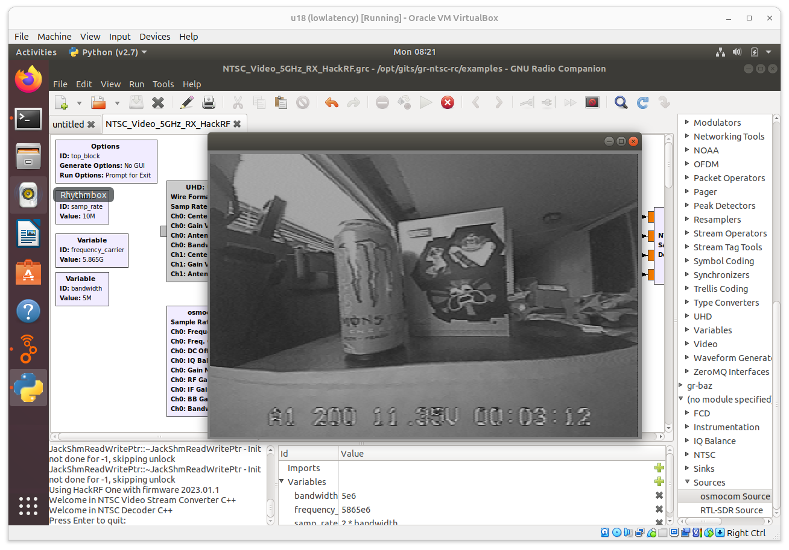

Lab: Analog Video Transmission Sniffing
Objectives
The Big Picture (Read This First)
This is the easiest attack of the whole course, and that's exactly the point. Analog FPV video (Module 19) is broadcast television — no password, no pairing, no encryption. If you tune to the right channel, the picture simply appears.
You'll receive the drone's live video on a HackRF and rebuild the picture in software. There's nothing to "crack" — the only skill is tuning the radio and wiring up a decoder. When the camera feed pops onto your screen, you've demonstrated a total loss of confidentiality with a $300 SDR and an antenna.

Typical FPV cameras + analog video transmitters. Whatever this camera sees is broadcast in the clear on 5.8 GHz — no pairing, no key.
How the decode works, conceptually: the HackRF hands raw I/Q samples (Module 11) to a GNU Radio flow graph. The graph FM-demodulates the 5.8 GHz signal back into an analog video waveform, then an NTSC sink block paints that waveform into frames — the same way an old analog TV did.
Analog Video Sniffing
Background
Analog FPV video transmitters broadcast on 5.8 GHz. A HackRF One can receive these signals (1 MHz – 6 GHz). The video can then be decoded using software.
Required:
-
HackRF One
-
5.8 GHz antenna (included in kit)
-
Analog video transmitter (instructor setup)
-
Software: GNU Radio Companion (with
gr-osmosdr+ thegr-ntsc-rxexample flow graph)
Install prerequisites (Ubuntu 18 VM):
apt -y install build-essential git cmake
apt -y install libsdl1.2-dev gr-hackrf gr-osmosdr
NTSC Analog Video Sniffing
Step 1 — Start GNU Radio and attach the HackRF
-
In VirtualBox, start the Ubuntu 18 VM and log in as
vbox:vbox -
Open a terminal and launch the flow-graph editor:
gnuradio-companion
- Connect the HackRF to the laptop, then pass it into the VM: Devices → USB → Great Scott Gadgets HackRF One

Step 2 — Open the NTSC receive flow graph
File → Open → /opt/gits/gr-ntsc-rx/examples → NTSC_Video_5GHz_RX.grx

Step 3 — Swap in the HackRF (osmocom) source
The example targets a USRP radio; we retarget it to the HackRF:
-
Right-click UHD: USRP Source → Disable
-
Right-click Null Sink → Disable
-
Use the search (magnifying glass) to find Sources → osmocom Source and drag it onto the canvas
-
File → Save As →
NTSC_Video_5GHz_RX_HackRF.grc

- Connect the osmocom Source output to the Quadrature Demod input (click the blue port on one, then the other — a line joins them)

Step 4 — Set the radio parameters
Double-click osmocom Source and set:
| Field | Value |
|---|---|
| Ch0: Frequency (Hz) | frequency_carrier |
| Ch0: RF Gain (dB) | 20 |
| Ch0: IF Gain (dB) | 40 |
| Ch0: BB Gain (dB) | 40 |
| Ch0: Bandwidth (Hz) | bandwidth |

Then double-click the Frequency Carrier variable block and set the video channel:
frequency_carrier = 5865e6 # 5865 MHz — match the transmitter's channel

Step 5 — Run it and watch the feed
-
Press the green ▶ arrow to run the flow graph
-
The intercepted camera display pops up in a new window — you are now watching the drone's live video
-
Press the red ✕ to stop

Discussion Questions
-
You captured the video with no password and no interaction with the drone. Which CIA property (Module 1) did this break, and which were left intact?
-
Analog video has no encryption option at all. If an operator needs a private video link, what must they switch to?
-
How would an operator even know their analog feed was being watched? (Hint: passive receive emits nothing.)
-
At what range could this interception occur, and what changes that range?